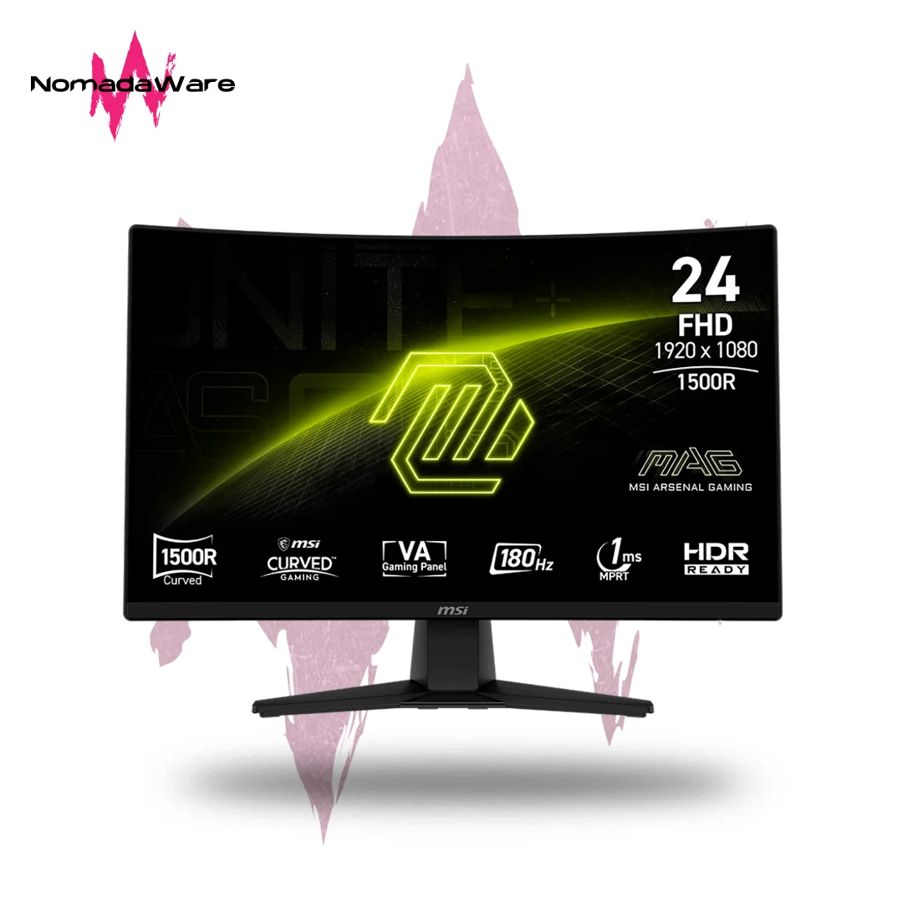

¡Descubre el monitor MSI MAG 242C y lleva tu experiencia de juego al siguiente nivel! Con su pantalla curva de 23,6 pulgadas y resolución Full HD, disfrutarás de imágenes nítidas y envolventes que te sumergirán por completo en cada partida. Su tasa de refresco de 180 Hz y tiempo de respuesta de 1 ms eliminan el desenfoque y el retraso, brindándote una ventaja competitiva en cada movimiento. Además, gracias a su tecnología Adaptive-Sync, experimentarás gráficos fluidos y sin interrupciones. ¡No te conformes con menos y elige el monitor que potencia tu rendimiento gamer!